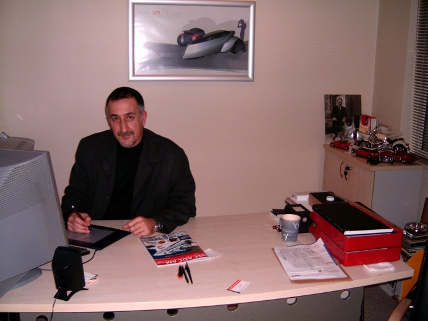

Ümit Altun
Endüstriyel Tasarýmcý
DesignUM
Ocak 2006, Ýstanbul
Not: Orijinal olarak TurkCADCAM.net
Dergisi 2. Sayýsý için hazýrlanmýþ bu
röportaj, ilk kez Aralýk 2006'da TurkCADCAM.net Portalý'ndan
yayýnlanmaya baþlamýþtýr.

Tasarým hayatýna nasýl baþladýnýz? Bu firmayý nasýl kurdunuz?
Ümit Altun: 1985 yýlýnda Mimar Sinan Üniv. Tasarým bölümü'nden mezun oldum. Ýlk iþim Otokar'da otomotiv tasarýmý üzerineydi. Ýki sene kadar burada çalýþtým. Ardýndan askerlik görevimden sonra Teletaþ'da mekanik ve endüstriyel tasarýmcý olarak göreve baþladým. Bu benim için enteresan bir konsept idi; Çünkü orada bizden beklenen sadece bizim bildiðimiz manada endüstriyel ürün tasarýmý deðil, ayný zamanda o ürünün konstrüktiv tasarýmýný da yapmaktý. Aslýnda bu biraz da ilgimi çektiði için orada çalýþmak istedim ve orada da 7 sene kadar çalýþtým.
Daha sonra Arçelik'e geçtim ve Arçelik'te toplamda 10 yýl uzman tasarýmcý ve tasarým bölüm yöneticisi olarak çalýþtým.
Bu sürecin en baþýndan beri aklýmda olan þey, hep kendi tasarým ofisimi kurmaktý ama tabii ki þartlar olgunlaþtýðý zaman bunu yapabilirdim; Bu þartlar hem Türkiye pazarýnýn buna uygun olmasý hem de benim kendi adýma þartlarýn olgunlaþmasý adýnaydý. Ýþte bu kararý da 2003 yýlýnýn sonlarýna doðru verdim; 2003 sonunda Arçelik'ten ayrýlarak 2004 baþýnda DesignUM ile yeni bir baþlangýç yaptýk.
Arçelik'te çalýþýrken özellikle gözlemlediðim þuydu; Endüstriyel tasarým hizmeti satýn alýrken, -özellikle küçük firmalar- bunu ürüne dönüþtürmekte zorlanýyorlardý. Çünkü sadece endüstriyel tasarým hizmeti satýn aldýðýnýz zaman bunun üzerine parça tasarýmý gibi ürün geliþtirme sürecinin diðer adýmlarýný da yapmak gerekiyor. Türkiye'de özellikle KOBÝ'lerin bu tür kapasitelerinin yeterli olmadýðýný gördüm. Hatta "Niye tasarýmý yurt dýþýna yaptýrýyorsunuz?" diye sorduðumda, "çünkü orada komple ürün geliþtirme hizmeti alýyoruz" diye cevaplýyorlardý. Komple hizmetten kasýtlarý þuydu; Tasarýmcý firma, kendilerine verilen fikri alýp ilk önce konsept tasarýmý, sonra estetik tasarýmý, daha sonra parça ve mekanik tasarýmlarýný yapýp kalýp aþamasýna kadar götürüp hatta kimi zaman kalýp danýþmanlýðýný da yaparak kalýbý teslim ediyor. O yüzden bu tip, komple çözüm sunan firmalarý tercih ettiklerini fark ettim.
"Ben yapacaksam böyle bir iþ yapmalýyým" diye düþündüm. Zaten Teletaþ'daki çalýþmalarýmdan dolayý, mekanik, özellikle beyaz eþya ürünleri, küçük ev aletleri ve otomotiv konusunda tasarým tecrübeme de dayanarak DesignUM'u kurdum. Dolayýsýyla biz DesignUM'da bir ürünün fikir aþamasýndan alýp kalýp aþamasýna kadar götüren ürün geliþtirme sürecinin tamamýný kapsayan çalýþmalar yapabiliyor ve bunu paket halinde firmalara teslim edebiliyoruz.
Kalýplarý da teslim ediyor musunuz?
Ümit Altun: Hayýr; Þimdiye kadar bunu isteyen de olmadý zaten. Ama kalýpçýya, imalat için gerekli 3D CAD modellerini biz teslim ediyoruz. Tasarým bizden çýktýktan sonra üzerinde ayrýca bir mühendislik çalýþmasý yapýlmaya gerek kalmýyor.
Yalnýz bu, tüm ürünler için geçerli deðil, bütün talepler de bu yönde olmuyor zaten. Ama kalýp tasarýmý konusunda talep olduðu zaman ve bizim de tecrübemizin yeterli olduðu konularda bu þekilde bir hizmet veriyoruz.
Tabii ki ürün geliþtirme desteðinde bizim için en önemli kýsým her zaman için endüstriyel tasarýmdýr.
Firmanýzý ilk kurduðunuzda müþteri bulmakta zorlandýnýz mý? Hangi firmalara tasarým hizmeti sundunuz veya sunmaktasýnýz?
Ümit Altun: Daha önceden tanýdýðým ve iþ yapabileceðimi bildiðim potansiyel müþteri firmalar olduðu için tereddüt etmeden firmamý kurdum ve ilk müþterilerimi bulmam bu þekilde zor olmadý. Çünkü onlarýn eksiklerini biliyordum.
Müþterilerim, elektrikli ev aletleri sektöründe Eksen ve Ernamaþ, Otomotiv sektöründe Otokar ve Karsan, Promosyon sektöründe ise Türmak ve Step-Pen'dir. Ernamaþ, mutfak robotlarý, Eksen firmasý ise çay-kahve makineleri ve ütü gibi ýsýtýcýlý ürünleri üretiyor. Bu firmalar Türkiye'de Arçelik, Beko ve Arzum, yurt dýþýnda da Moulinex, Electrolux ve Kenwood gibi markalar için üretim yapýyorlar. Bu firmalarýn ürünlerinin çoðunun tasarýmýný biz yapýyoruz. Örnek vermek gerekirse, çay demleme makineleri, elektrikli kahve cezveleri, mutfak robotlarý ve elektrikli süpürgeler gibi ürünler tasarlýyoruz.
Anlaþýlan piyasadaki birçok küçük elektrikli ev eþyasý marka sahibi þirket, tasarým ve üretimi baþka firmalarda yaptýrýyor?
Ümit Altun: Evet, her þeyi kendileri üretmiyorlar, en çok hangi firmada kendi ürün portföylerine uygun tecrübe birikimi varsa oradan satýn alýyorlar. Çünkü her þeyi kendiniz üretemezsiniz, mümkün deðil; Yani bu, binlerce ürün çeþidi ve yüzlerce fabrika demek.
Marka sahibi firmalar yeni bir ürün için fonksiyon, hedef pazar ve fiyat gibi ürün tanýmlamasýný yapýyor ve üretici firmalar da bizlerle irtibata geçiyor ve o ürünlerin tasarýmýný yapýp üretime hazýr hale geçirmeye çalýþýyoruz. Bazen de, zaten üretilmiþ olan bir ürünü beðenerek kendi markalarý altýnda satabiliyorlar.
Moulinex, Electrolux ve Kenwood gibi markalarýn sahibi þirketler, Uzakdoðu ülkelerindeki ucuz üretim alternatiflerine raðmen Türkiye'deki Eksen ve Ernamaþ gibi firmalarý neden tercih ediyorlar?
Ümit Altun: Evet, Dünya'da birçok büyük firma, küçük elektrikli ev aletleri için -sadece fiyat kriterini göz önünde bulundurarak- Çin'e gidiyor. Þu sevindirici ki, gerek bizim tasarým konusundaki katkýlarýmýz gerekse de üretici firmalarýn kaliteli üretimleri sayesinde artýk Türkiye de tercih edilmektedir. Bu çok keyif verici bir þey. Tabii ki ürünlerin bir kýsmýný Uzakdoðu ve Çin'den almaya devam ediyorlar.
Türkiye'de Eksen ve Ernamaþ gibi firmalarýn olmasý aslýnda çok gurur verici bir þey; Üretime dönük çalýþan ve yeni ürün geliþtirmeyi hakkýyla yapan, gerçekten sayýlý markalarýn kendileriyle çalýþtýðý firmalar bunlar. Aslýnda bir yönüyle Eksen ve Ernamaþ'ýn isimsiz kahramanlar olduklarý da söylenebilir. Zira bu firmalar kendi markalarý ile üretim yapmýyorlar ancak gerçekten Dünya'nýn en iyi markalarýna üretim yapýyorlar. Bu ürünler Türkiye'de Avrupa'nýn birçok ülkesinde ve ABD'nde satýlýyor.
10-15 sene öncesine kadar, yurt dýþýna çalýþan yerli firmalar çoðunlukla kalýp imalatý ve seri üretim odaklý faaliyet gösteriyordu. Ama þimdi görüyoruz ki artýk tasarýmdan üretime kadar bütün safhalarý baþarýyla üstlenen firmalar var. Bunun bir sonraki aþamasý ise bu firmalarýn kendi markalarý ile üretim yapmalarý olacaktýr?
Ümit Altun: Evet; Aslýnda Arçelik ve Beko zaten yýllardýr bu görevi yerine getiriyorlar; Bu markalara ait ürünler tamamen bu ülkenin Ar-Ge'siyle, el emeðiyle, sermayesiyle hem burada tasarlanýyor, hem de burada üretiliyor ve bunlar zaten yýllardýr Avrupa pazarlarýný hallaç pamuðu gibi atýyorlar. Örneðin Beko, Avrupa'da artýk bilinen bir marka.
Aslýnda gelinecek nokta, dediðiniz gibi artýk markayý oluþturup ülkenin kazandýðý katma deðeri daha da arttýrabilmek. Çünkü siz markasýz üretim yaptýðýnýz zaman, sonuçta asýl kazanan marka sahipleri oluyor. Dolayýsýyla bu devirde asýl önemli olan markalara sahip olmak. Üretimi nerede ve ne þekilde yaptýrdýðýnýz deðil, hangi markada, hangi kaliteyle yaptýrdýðýnýz önemli. Artýk Avrupalý tüketici de Çin malý veya Endonezya malý diye ürünü satýn almamalýk yapmýyor; Þayet markaya güveni varsa, nerede imal edilmiþ olursa olsun, kalitesinin kontrol edildiðini, bir problem çýkmayacaðýný, çýksa bile marka sahibinin desteðinin devam edeceðine inancýndan dolayý müþteri o ürünü satýn alýyor.
Bu arada, örneklerimde "Çin Malý" derken aþaðýlamak manasýna söylemiyorum; Fiyat aralýðý açýsýndan karþýlaþtýrma yapýyorum. Yani bir Çin malý ile Avrupa markasý arasýndaki fiyat farký, tasarým ve imalat süreçleri arasýndaki farklýlýktan doðuyor; Çünkü birisi, gerçekten birçok prosesi hazýr alýp, çok fazla kafa patlatmadan baþarýlý ürünlerin benzerlerini yapmýþ, diðeri ise doðuþundan itibaren bütün problemlerini yaþayarak ürünü geliþtirmiþ, markayý güçlendirmiþ, markaya güveni saðlamýþ... Aradaki fiyat farklarý da tabii ki bundan dolayý geliyor.
Yakýn zamana kadar, yurt dýþýndan aldýðý lisanslarla üretim yapan Türk firmalarýnýn daha sonralarý kendi Ar-Ge Bölümlerini kurarak ürettikleri orijinal ürünlerle Dünya pazarýna açýlmalarý ve bu süreçte etkili olan faktörler hakkýnda görüþleriniz nelerdir?
Ümit Altun: 15-20 sene öncesine kadar Türkiye'deki firmalarýn birçoðu lisansý satýn alýp kendi fabrikalarýnda bu lisansa göre üretim yaptýlar. Zaman içerisinde bu ürünlerin teknolojisini öðrendiler, dolayýsýyla aslýnda, o dönemde bir teknoloji transferi yaptýlar.
Þunu hatýrlýyorum ki, Arçelik'te yeni çalýþmaya baþladýðým dönemde, 1994 yýlýnda Arçelik kendi ürününü geliþtirmeye karar vermiþti ve bazý buzdolabý modellerini kendisi yapmaya baþlamýþtý. Ama o dönemde bulaþýk makinesi hala lisanslýydý. Tamamen bu lisanslardan kurtulabileceði (sadece maddi olarak deðil) bilgi birikimi olarak da bundan kurtulmaya hazýr olduðunu hissettiði zaman kendi Ar-Ge'sinde, patentlere takýlmayacak þekilde, kendi patentlerini alarak ve geliþtirerek ürün tasarýmý yapmaya baþladýlar. Ve o zaman ürün tasarýmý, komple mekaniði ile, motoruyla, sistemiyle, ülkemizde tasarlanmaya baþlayýnca artýk endüstriyel tasarýmý da burada yapmak söz konusu oldu. Ar-Ge bölümleri önceden beri vardý ama yapýsal olarak deðiþerek artýk yeni ürün geliþtirmeye baþlandý. Ar-Ge dahilindeki endüstriyel ürün tasarýmý bölümü, mühendislik, malzeme, yüzey iþlemleri, araþtýrma laboratuarlarý vs. hepsi geliþip bugünkü noktaya geldi.
Ve bugünkü noktada baktýðýnýz zaman, bu tip firmalar zaten Dünya'daki rakiplerinden geri deðiller, birçok konuda baþa baþlar, bazý konularda daha ileriler. Dolayýsýyla artýk þu an global birer oyuncu oldular. Tabii ki bu bir süreç. Baþlangýçta, evet lisansla baþladýlar ama þu anda lisansý aldýðý firmanýn ülkesine bol miktarda ürün satýyorlar. Hatta son zamanlarda Avrupalý önemli bazý markalarý da satýn aldýlar.
Yeni geliþtirdiðiniz ürünlerin Dünyadaki diðer ürünlerden farklý olmasý ve diðer patentlerle çakýþmamasý nasýl saðlanýyor?
Ümit Altun: Zaten müþterinin ihtiyacýna göre bir süreç izleyip ürünü tamamen o ihtiyaç doðrultusunda yaptýðýmýz için, hatta formunu bile ihtiyaca göre netleþtirdiðimiz için (mesela Türkiye'de satýlacaksa daha farklý Avrupa ve Amerika'da satýlacaksa daha farklý gibi..) esinlenme kaynaðýnýz sadece ve sadece ihtiyaç oluyor. Dolayýsýyla þimdiye kadar patent çakýþmasýndan ötürü bir sorun yaþamadýk.
Belki mekanizma tasarýmýnda baþka bir patentle çeliþme ihtimali olabilir ama endüstriyel tasarým kýsmýnda, baþka bir ürünü birebir kopyalamadýysanýz zaten bir benzerinin bulunmasý pek mümkün deðil. Zaten sizin ihtiyacýnýz ve beklentileriniz farklý. Mesela bir kahve veya çay makinesi yapýyorsanýz, o sizin kültürünüzden çýkmýþ olan birtakým ihtiyaçlar doðrultusunda þekillendiriliyor ve "bize" ait oluyor.
Bu þekilde ürünü ilk yapanlar biz oluyoruz. Mesela Arçelik'in Tiryaki markasýyla piyasaya sürdüðü çay demleme makinesi buna iyi bir örnek; Dünya'da bu ürünlerin çok örneði yoktu, birtakým firmalarýn, bir tarafta sýcak su ýsýtan bir tarafta çayý sýcak tutan bazý ürünleri vardý ama üstünde buharla demliði sýcak tutan bir ürün yoktu. Eksen firmasý bunu ilk defa Türkiye'de yaptý. Zamanýnda teknolojiyi takip ediyorduk ama artýk kendi kültürümüzden çýkarttýðýmýz ürünler takip edilmeye baþlandý. Çünkü bize ait bir sürü enteresan ürün var.
Mesela, adý üstünde Türk Kahvesi makinesini bir yabancý bizden daha iyi yapmamalý. Arçelik'in Telve markalý otomatik Türk kahvesi makinesi buna çok güzel bir örnek. Bu makine geliþtirilirken Arçelik'te çalýþýyordum ama sonuna yetiþemedim. Türk kahvesinde köpük çok önemlidir, dolayýsýyla bu makine geliþtirilirken köpük miktarý ölçme ve karýþtýrma konusunda patentlere baþvurulmuþtur. Kahve içmeyen bir insanýn bunu tadýnda yapmasý mümkün deðil; Otomobil kullanmadan otomobil yapmak, ütü yapmadan ütü tasarýmý yapmak gibi bir þey bu; Yani problemi doðru tanýmlayamazsýnýz.
Sonuçta, global pazarda baþarýlý ürünler geliþtirebilmek için bence öncelikle kendi kültürümüze inip oradan bir þeyleri çýkartmamýz lazým.
Çok güzel bir tespit. Aslýnda, özellikle son 5 yýlda, ülkemizde tekstil, müzik, sinema, TV dizisi, çizgi film dahil birçok konuda yerli tasarým ve üretime olan ilgide bir artýþ görülüyor?..
Aslýnda bu bence iki taraflý bir þey; Yani yerliye karþý güvenin artmasý belki özgüvenin artmasýný tetikliyor ama ayný zamanda özgüvenin artmasý da yerliye karþý güvenin artmasýný tetikliyor. Dýþarýda baþarýlý olabilmemiz için zaten öncelikle kendimize güvenmemiz lazým; Biz önce kendimize güveneceðiz ki insanlar da bizim yaptýðýmýz ürünlere güvensinler.
|